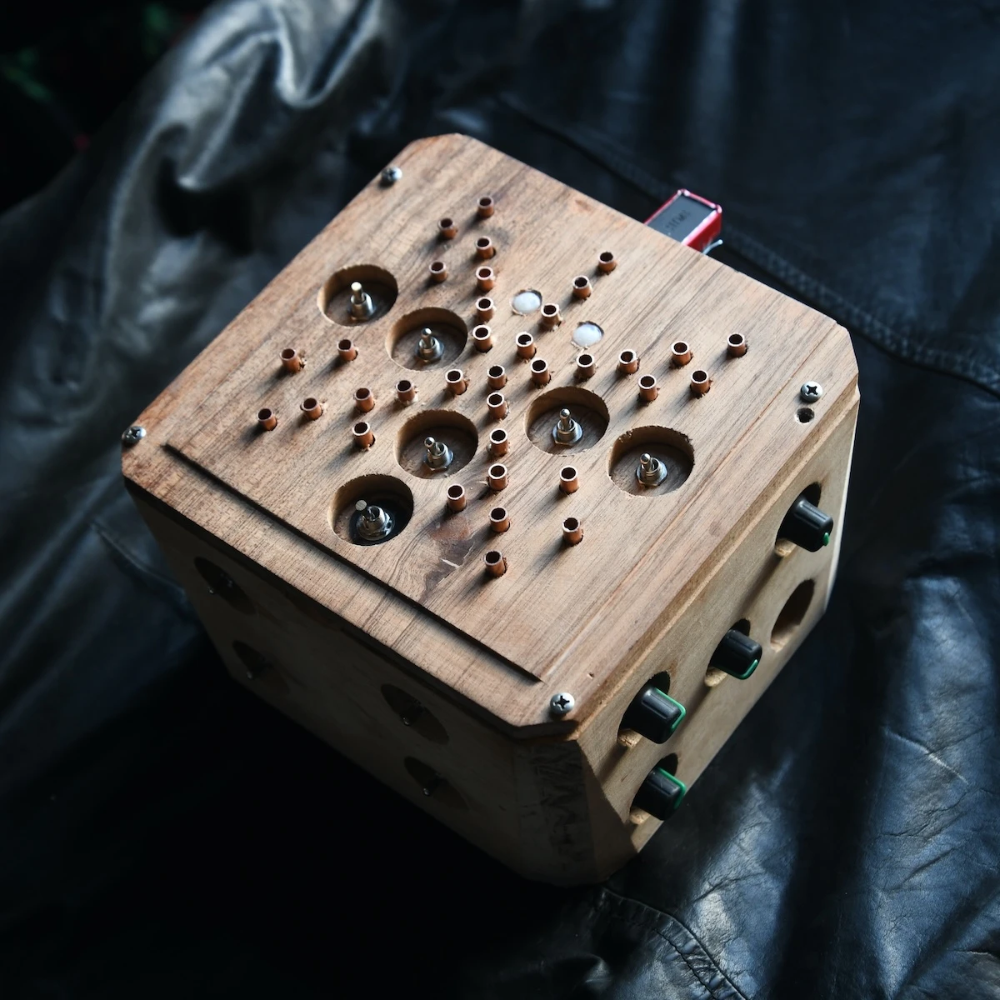
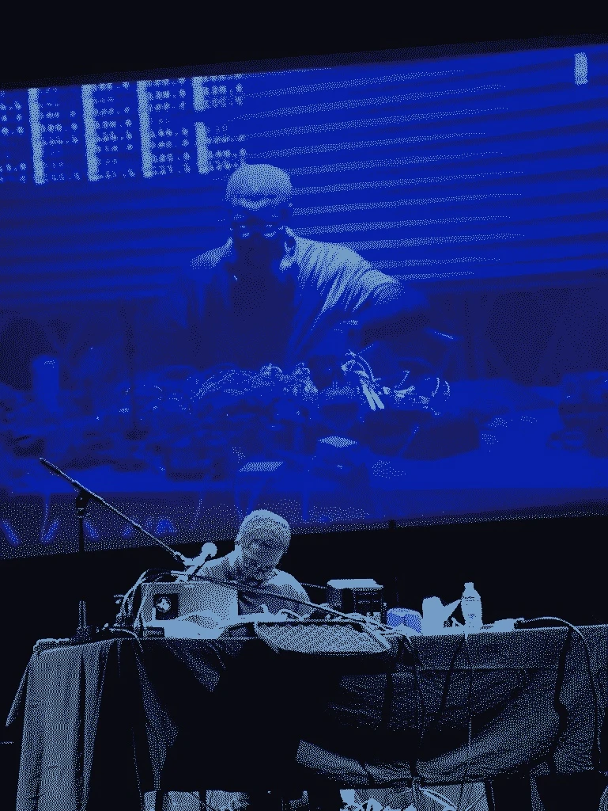

Ciat Lonbarde DIY

- Rolzer Stargate
- Nobsrine
- Rolzer
- Xiaohongshu Gewei
- Rollz-5
- Dogevox 2
- Dogevox 1
- Lil Sidrolz
- For Sale
- Barre Controller
- Solar Sounders
"the nobsrine is an electronic musical instrument designed for babies. It uses just two knobs, and an "on" switch to accomplish a wide range of simple, classic electronic sounds. It does this by "sampling" the knob at each turn, and also using the energy of the turn to control the amplitude of two plus two triangle oscillators. It is for babies of DJs and noise musicians, who want to introduce their children to strange sounds, chaos magic, the idea of infinite degrees of relationship between tones, without the more complicated techniques involved in uper crust CIAT INSTRUMENTS." - peter b

"The top two panels contain the pulse-brain circuitry- the geometrical forms that I call rolls. They are three, four, five, and six-noded versions of the same simple transistor circuit. They cycle impulses, inverting polarity at each node; imagine a pulse oscillator flipping at a set frequency. From this humble base whole montages can be built by connecting nodes to nodes on other rolls." - peter b
xiaohongshu rollz-5. Rollz-5 with modifications. Walnut, Cherry, Mink and Epoxy Resin.
"The focus is a collection of modules called “Rollz-5”, which creates organic rhythms out of geometrical forms. A future direction is to create electronic sound devices based on the platonic solids and other 3-D topographies." - peter b

Rollz-5

Dogevox V2. Cigar Box and Walnut.

Dogevox V1
Lil Sidrassi
"The Lil Sidrassi: a pentagram of primitive oscillators and a speaker". It is a very touchable bee motorcycle sound maker box. Each one is different because you put custom capacitor values in it." - peter b
$333
email sadnoise@femishonuga.com
Roulette Workshop Sidrassi

barre controllers, passive and conrad papers active. Walnut and Ash, Walnut, Pine and Cherry.
$200
email sadnoise@femishonuga.com
Solar Sounders

incoming ciat lonbarde diy guide